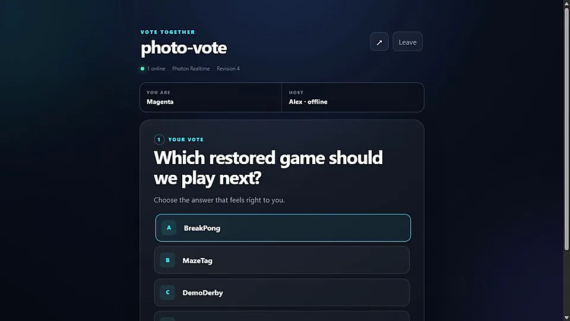
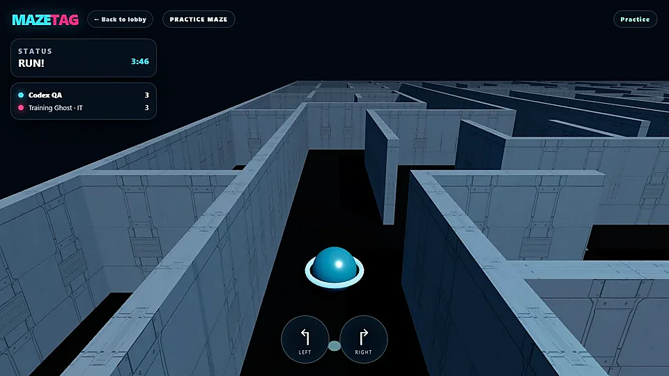
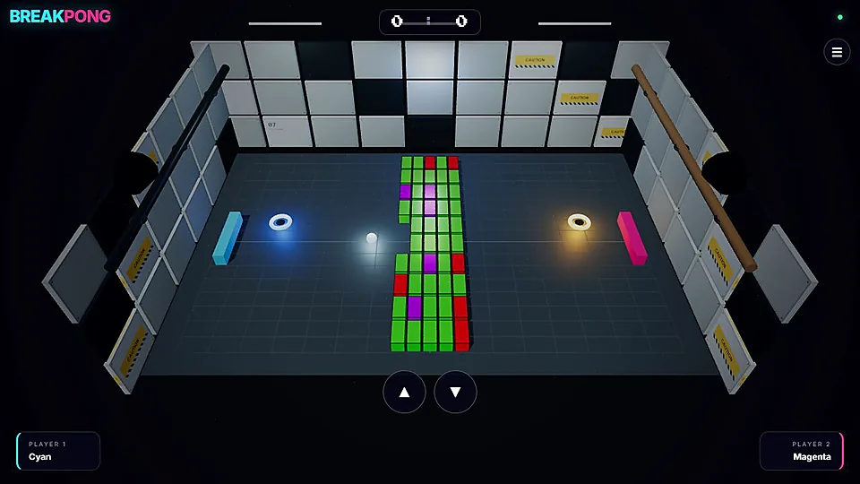
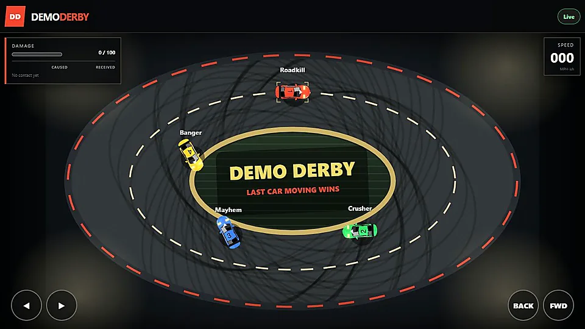
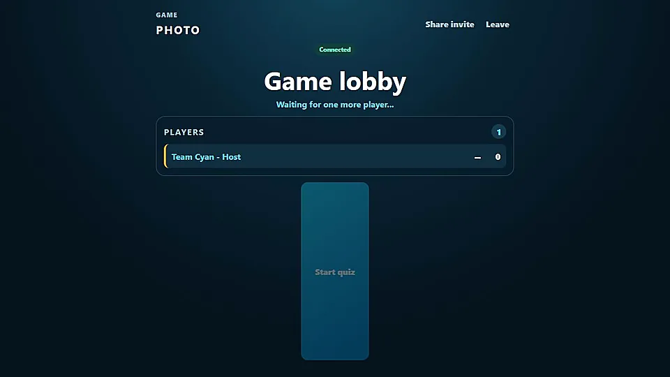
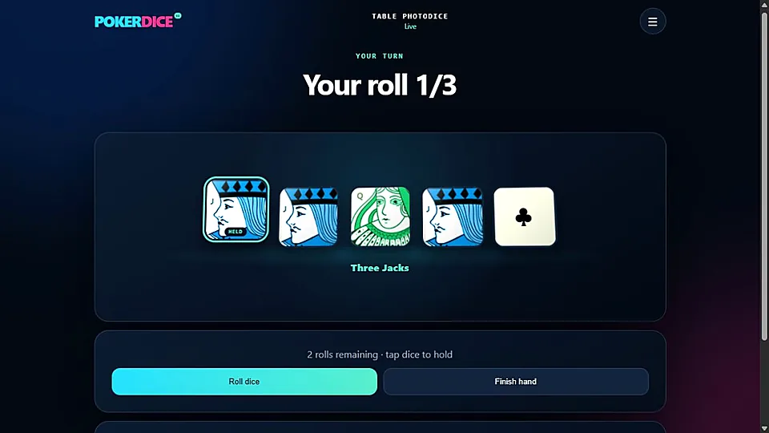

VoteTogether
Create one instant poll and share it with anyone who wants to vote—an anonymous, multiplayer take on the classic Wii voting idea.
Features: Persistent host, live results, predictions, scoring, share links and QR codes.
Originally created for the Multisynq multiplayer engine, this collection has now been restored and rebuilt on Photon Realtime. The original repositories retain the journey from first prototype, through Multisynq, to their new Photon editions.
The complete collection is live on Photon.

Create one instant poll and share it with anyone who wants to vote—an anonymous, multiplayer take on the classic Wii voting idea.
Features: Persistent host, live results, predictions, scoring, share links and QR codes.

Fast multiplayer tag through selectable mazes, complete with fading player trails and maps created from spreadsheets.
Controls: Use the arrow keys or on-screen controls to turn, dash and evade the hunter.

Pong meets Breakout in a Portal-inspired 3D arena—with breakable walls, shrinking paddles and paired portals.
Controls: Move your paddle and get the ball past your opponent. Spectators can watch live.

A multiplayer demolition derby: ram your opponents, manage the damage and try to be the last car moving.
Controls: Drive forward or back and steer. Late arrivals can follow the action as spectators.

A pocket multiplayer buzzer for instant, impromptu quizzes. Install it on a phone as a Progressive Web App.
Controls: Tap the tick or cross to answer while the host runs the quiz and keeps score.

Two games at one table: classic Poker Dice and a bluffing, pass-the-cup Liar’s Dice variant.
Controls: Roll, hold and build the best hand—or inherit the hidden dice, raise the claim and decide when to call the bluff.
Six experiments. Six Photon restorations. All live.